According to popular news media, there is no such thing as the MWI or world-lines. It is all a fun scientific avenue for discussion, argument, and maybe a movie or two. It has no real benefit to the average person. Of course this is all nonsense. It the MWI exists whether we want to believe in it or not.
Further, while scientists and mathematicians like to debate the utility of world-line behavior. As well as debate the presence of it in regards to the MWI, all tend to base their discussions abound a key erroneous assumption; that there are no world-lines simply because one cannot prove that they exist.
This assumption is wrong. It is incorrect.
Oh, individual world-lines exist all right. And they operate under specific rules and follow various processes. Let’s take the time to talk about these rules and processes. Later, we will also discuss why average guys, like myself, had a role in such an important program as MAJestic.
What is a “world-line”?
For starters, most people understand what a “world-line” is. It is generally considered to be a “what if” world much like the one that we inhabit, but with certain things changed. In the movie, “Back to the future II”, the hero enters a new world-line when the past is changed.

This idea is readily understood by most people.
That is simply because most people think of time incorrectly. They view time as a straight arrow, and once something is done, it cannot be undone. You cannot put a chicken back into an egg. Once you burn a log, it will no longer revert to being a tree. Thus, we have what is perceived as “the arrow of time”.
A “world-line” might be a place where the Nazi’s won world war II. Another might be one where Hillary Clinton won the 2016 election, instead of Donald Trump. Still another might be one where the Y2K “bug” devastated America’s infrastructure. World-lines are “what if” scenarios that mimic the reality that we inhabit.
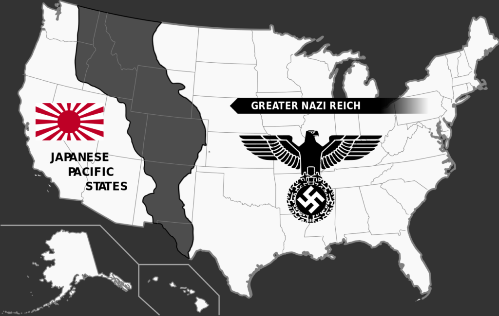
World-lines are thus considered to be an infinite number of “arrows of time”, each with slight modifications. Each “arrow of time” is considered to be a “world-line”. We occupy one such world-line, in an infinite number of alternative world-lines.
However, Time does not Exist
The problem is that we lie to ourselves. We strongly believe that time exists and that it is one-way, and that the “arrow of time” is the way that time works. Therefore, a “world-line” is but a modified “arrow of time”. It deviates from our current occupied world-line by some deviance.
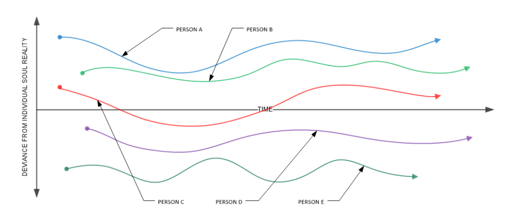
The problem is that time does not work this way. As long as we keep thinking that it does, we will have a difficult time understanding how the MWI works. This causes all sorts of confusion.
To understand what “world-lines” are, we must first understand what our reality is.
Reality
The reality is that we exist within a specially crafted bubble of “reality”. Our thoughts and our actions alter this bubble.
In the picture below we see a slice of “Heaven”. Residing within that Heaven is a soul. The soul creates a “bubble” and places a conduit inside that bubble. We refer to that conduit as “consciousness”.
This “bubble” is our observed reality. It has two components; an observed physical reality, and a hidden unobserved reality.
This bubble is constantly changing.
It changes by our actions…
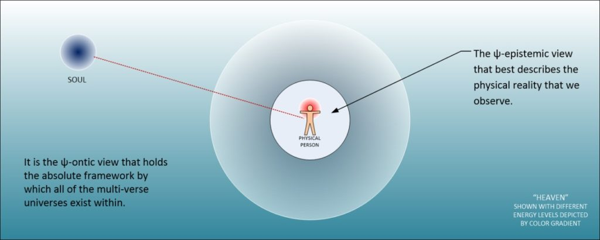
For instance, if we shot and killed a person, we would get arrested, and go to prison. If we worked hard, we could get promoted. If we asked that cute girl out, we might fall in love and get married. Our bubble of reality would change by OUR actions.
It also changes by our thoughts…
So, if we were obsessed with negative thoughts and worry, our health would decline. If we were mean and hurtful to others, our reality would be altered to fit with our thoughts.

Within this bubble of reality, it would appear that time was flowing in one direction; the “arrow of time”. But that is just an illusion. In reality, we are constantly revising our bubble of reality, moment by moment, by our thoughts and our actions.
There is no such thing as time.
There is no such thing as “time”
What we consider to be the movement of time is actually the changes from one timeless “bubble of reality”, to a revised (but still timeless) “bubble of reality”.
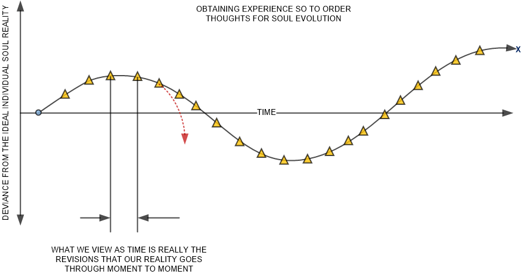
In the picture above we see the “arrow of time” displayed as a collection of revisions to our reality. Our reality is constantly being updated. To us we consider these “updates” as time.
While there is no such thing as a "world-line", we WILL use this terminology to describe the "vector movement of a given reality" as entropy changes.
Graphing World-Lines
We can graph world-lines in terms that we can understand. Instead of “bubbles of reality”, we can plot their vector (movement) as a “world-line”. We can plot them over (apparent) time. We can measure their deviance from each other comparatively as well.
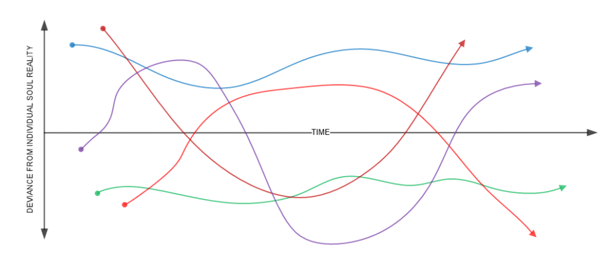
Cluster Behavior
Groups of divergent world-lines tend to form into organized clusters. These clusters also operate under rules and specific behaviors. Here, at this time, I would like to describe these behaviors. Because in order to understand our reality, the reader needs to understand some basics regarding world-line behaviors. (Group clustering behaviors of reality vectors.)
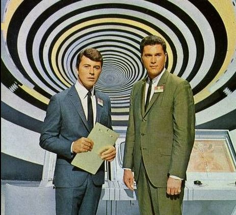
World-lines have a tendency to “feed off each other”. Which actually means that the thoughts and actions on one world-line can influence adjacent world-lines. Thus they like to “hug” close to other world-lines and acts as an inertial damper prohibiting change.
This is a fundamental property or behavior of world-lines.
This is what is referred to as “clustering”. It is when there are very active and engaged world-lines of near similarity to each other that also maintains active consciousness. Most world-lines are “empty”. They exist, but do not have a consciousness that inhabits them. When they are nearly identical to other world-lines, we say the deviance between them is small. And thus they “hug” each other.
Why there are “world-lines” that we inhabit
World-lines are a part of the universe that we humans experience. However, a very important point needs to be made. World-lines are created by each individual soul as an educational environmental construct so that the soul can grow.
This is an important point that needs to be made.
- The soul creates a given reality.
- It places a consciousness within that reality.
- The consciousness experiences life within the reality.
- As it experiences life, it generates thoughts and performs actions and activities.
- These actions and activities alter the reality.
- This alteration helps to build, purify, and destroy quanta arrangements.
- Thus, the consciousness organizes quanta for the soul.
The purpose of life is to improve, maintain and assist the soul to grow and improve.
Feed Back Loop
Not only is the individual reality and individual universe tailor-made for a given soul. When the soul places a given consciousness in that reality it is affected by the reality itself. Indeed, the shape of each world-line is influenced by the collective thoughts of all “shadow” consciousnesses combined within that reality.
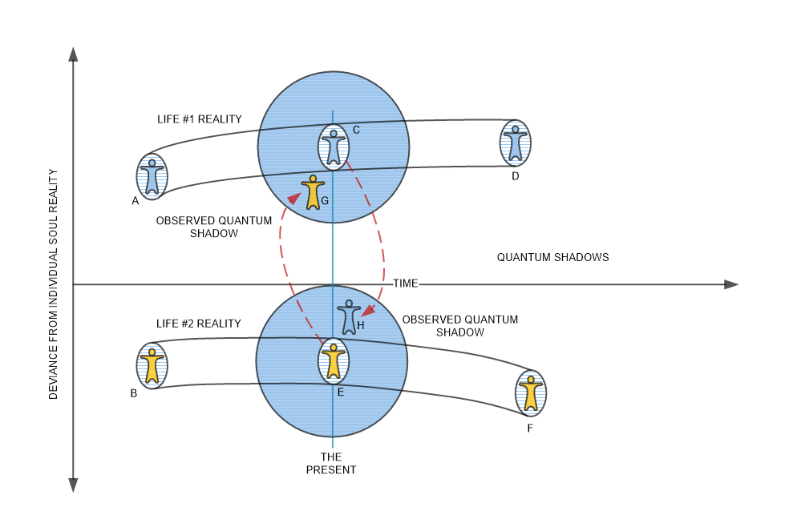
All those people that surround you are NOT individuals.
They look that way. They act that way. They seem that way. Because this is OUR own custom-made reality.
They are “quantum shadows”; a version of that person that acts and behaves within your reality as necessary to help you grow.
They, themselves, also (like you) inhabit their own reality. And, like you, also see a version of you; a “quantum shadow” interacting with them within their own reality.
Because of these key points, the reader should realize that group think, and multiple souls create mob and mass behaviors that affect all associated thoughts. Since individual thoughts are manipulated by and suffer the influences of group thought, it should be well understood that world-line clusters would be influenced by group thought behavior.
The role of Thought
We live in a universe that is controlled by thought. However, our soul is not one homogeneous blob. Rather it is a complex construction with key parts that have roles and follow defined rules.
Our thoughts originate from segmented sections of our soul.
Each segment is a configured physical reality with a physical body, a brain and thoughts directly associated with that body. This physical body exists within a custom reality. This reality is created from the highest commonality denominators between groups of other individuals and other souls.
This is pretty well understood. However, if you really think about it, you can see a unique danger. The thoughts of others, while they do not share your own physical reality (universe), will absolutely influence your reality.
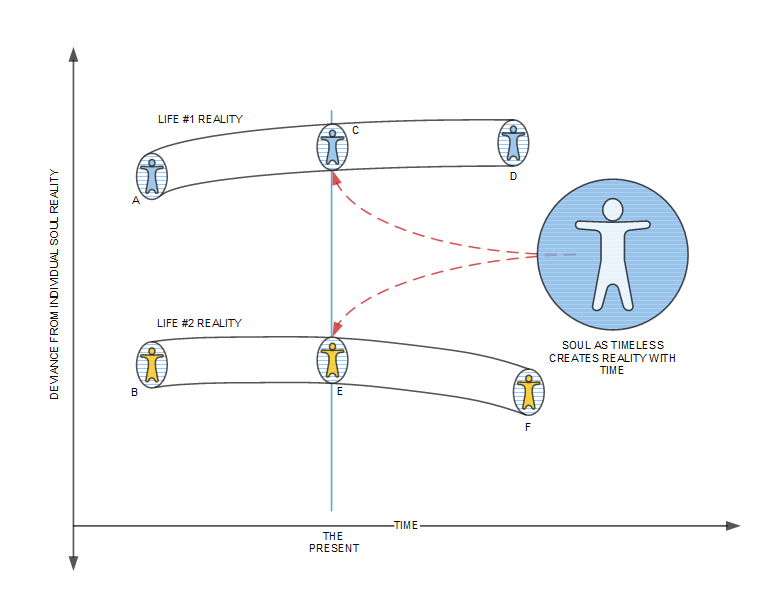
World-Lines are a function of soul garbons
Our soul creates our reality that we live in on the physical. This reality (universe) is directly tied to the construction of our soul. Each soul is composed of garbons, and the limitations of the garbons limit the kind of universe that our physical body inhabits.
A garbon is an arrangement of quanta. It has distinct forms and properties. The human soul is a collection of garbons. Garbons are organized quanta. The human soul also has unorganized quanta. The purpose of consciousness is to assist in organizing the unorganized quanta through thoughts and actions within a contrived reality.
A garbon is a important component of a soul. Without getting into too much detail, the reader can think of it as an analog to human organs. Each garbon has a different role.
These roles vary from activity to activity. Yet they have an important role in the creation of the reality that we inhabit. Some garbons are tied to the longevity of a given lifetime for a person (the duration of the world-line). Other garbons are tied to things such as thought influences, adventures, and trials that one must endure to acquire lessons.
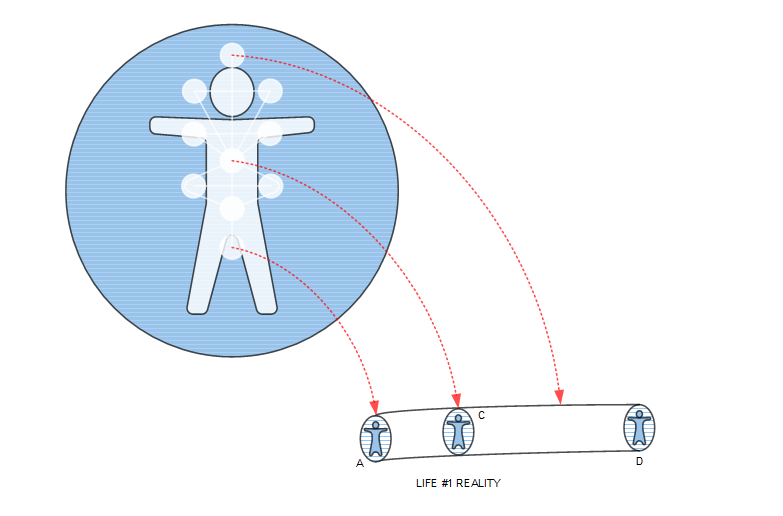
Remember, a “world-line” is an illusion. Because the “world-line” is constantly changing by the thoughts of a given consciousness. Instead, a “world-line” is the apparent vector of life for a given consciousness as it navigates inside the bubble of reality that it has been assigned to.
Group Thought manipulates clustering of world-lines
Thoughts influence what happens in the reality and the universe that our physical bodies inhabit.
This includes [1] individual souls, [2] individual people, and the [3] thoughts and actions of groups of people. Group thoughts, especially those influenced by media and other technological advancements, can influence the world-line that a physical person inhabits.
This is true, even though on the physical reality world-line the “people” that one interacts with are (just) quantum shadows.
The world-lines change relative to other world-lines as determined by the ebb and flow of the thoughts of a soul and person in a given world-line. Thoughts influence the shape and direction that a given world-line manifests into.
Limitations
Contrary to what scientists might want to believe, there is NOT an infinite number of world-lines. There is but one world-line for each physical person at any given moment in time.
However, there is an infinite number of world-lines that a given consciousness can cross-over to. The practical number available varies depending on the technology and the technique used to bridge over to the new world-line. Since it is technology, and skill dependent, it is functionally finite.
The person who inhabits the world-line is the captain of that world-line and they can create, alter or destroy their world-line as they see fit by their thoughts. As well, as obviously, their physical actions.
Shadow World-Lines
A world-line can spawn shadow world-lines. There are an infinite number of these spawned world lines. They are a function of [1] thought and [2] the technology of being able to move between world-lines of the physical person.
A Shadow World-Line is a reality that the consciousness can migrate to.
A person, given the proper technology, can move in and out of these spawned world-lines. We like to think that it is “just” another world-line. It is not. It is a special event or environment that permits a consciousness to move into and occupy.
However, the shape of the spawned world-line will be heavily influenced by the thoughts of “nearby” souls and their world-lines. It is not a “protected” reality.
“Nearby” refers to a degree or a measure of the divergence from one “reality” to the next.
Once we, as a physical component of our soul, occupies a given “reality” and world-line, we are constantly influenced by nearby world-lines and the thoughts manifested by those world-lines.
In primitive times, when there were only a few hundred thousand humans, the influences of others were easy to distinguish and isolate. Those closest to the person physically had the greatest influence. Now, in modern times, in a world that is populated by billions of people the influence is much stronger, and can result in some quite surprising influences.
Technology Influences on World-Lines
Not only do individual thoughts on other realities and other world-lines influence a given world-line, but technology can magnify the effect. The technology influence can be intentional, as well as unintentional.
News media does more than just “simply” form “public opinion”; they form large “pools” of “group think”. Group think can be dangerous and create not only physical reactions such as mob rule, but can also create disturbing influences in world-line behaviors.
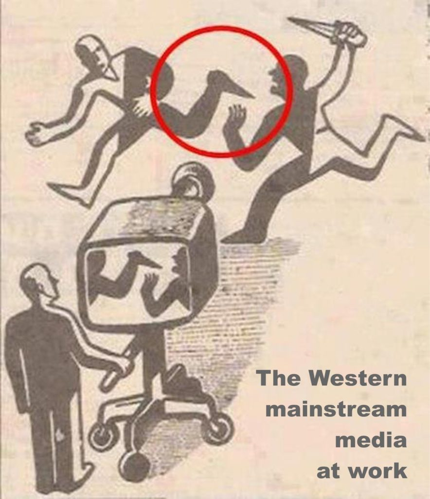
These influences can affect the physical world that a person interacts with.
It can affect his future obviously, and can affect his past as well. Out of control thought can sow chaos and cause all manner of discord and even more dangerous; unpredictable behaviors.
Now, attention is warranted. Not every thought is capable of influencing a given world line. The relationship depends on a number of factors that include deviance from uniformity, intensity, personality of the physical person, and the structure of the world-line itself (it does have structure). Strong thoughts, or collective thoughts tend to be very powerful and influential.
World-line clustering behavior
World-lines and their spawned world-lines tend to cluster together in similarity of thought and intensity of intention.
As such, depending on many factors, world lines tend to group together into “cable” like arrangements and twists and turns over time depending on the various influences in the individual world-lines. Not only that, but there is a feed-back loop that tends to positively, or more likely, negatively influence the shape and configuration of the world-line so inhabited.
Manipulation of our World-Line
The extraterrestrial species known as the <redacted> are a multi-dimensional species. Their soul configuration is multi-dimensional. They have a major role in the evolution of mankind. They utilize their superior technology and their multi-dimensional existence to help mankind grow.
We are a very simple life form. They are assisting us in our sentience development, and this planet Earth is our nursery. All of this is covered elsewhere.
For now, the reader should first understand this basic point;
In order for the human race and species to evolve, we need to exist within a controlled “safe space” .
The <redacted> has made the necessary arrangements for multi-generational sentience development along with support by another extraterrestrial species the <redacted>. They have created situations in agreement with our souls and the hierarchy within our own “Heaven”. The intentions behind these agreements is to create a stable nursery for us to develop and learn in.
Unfortunately, due to the explosion of population in the world, and the explosion in technology, it has become rather difficult to “control” world-line propagation and predictive behaviors.
Note; if the world-lines diverge too substantially from what was first established by our soul hierarchy upon our birth, the lessons that our souls are to learn during our reincarnations might not manifest.
Indeed, most of the human race has had a pretty easy history more or less. Sure, there were wars and turmoil, but the dimensional world-lines, for the most part, were stable.
This is not the case today.
Period of Contention
Apparently, sometime around the year 2000 was a pivotal point in time where the global human species faced a major disruption of the world-line continuance. This was global, and not American-centric.
This world-line disruption was global in nature, it was not American-centric.
It had nothing to do with 9-11, or Y2K, but involved the saturation of group think as well as numerous events in the Soviet Union, China, and Northern Africa.
Unchecked, the world-line divergence might become too unstable and would be difficult to predict. (The necessity for predictive behavior is important for soul development.) The risk of major disruption to soul evolution was too great and too dangerous.
To this end, the <redacted> and their assisting species, the <redacted> worked with MAJestic in the 1980’s. MAJestic leadership nominated suitable individuals that it provided to the <redacted>. They were implanted with special devices and trained as “dimensional anchors” to stabilize the world-lines. All with a goal to prevent unpredictable behaviors due to unchecked human access to technology.
Dimensional Anchor
To fully understand MAJestic’s role with the <redacted>, one must understand the science behind the relationship. In other words, how can an 1850 train engineer describe his role to a medieval monk without first describing what a train is, what rails are, how a steam-fired boiler operates, and the limits of moving people from one location to another? It is quite difficult to do unless the basic foundations are first laid down in an easy to understand manner.
That is what I intend to do here. To best and first understand <redacted> in MAJestic, the reader will have to understand [1] soul cluster theory, and an [2] introduction in how thoughts alter world-line divergence, and [3] how group-thoughts can unintentionally disrupt the acquisition of experiences.
To begin with, let’s recap some points made earlier (or elsewhere) in the blog posts.
- Firstly souls create a custom environment from which a physical manifestation (of the soul) inhabits for the purpose of obtaining experiences.
- This custom environment is the “reality” of the physical manifestation of that soul.
- It appears that the soul shares the reality with other beings, but that is an illusion. Each being has a physical manifestation that occupies their own realities.
- As such, the physical person interacts with quantum shadows of other beings that are in truth off and away in their own individual realities.
Basics
We can think of this situation as a series of world-lines all inhabited by one physical manifestation of a soul each. Consider the illustration below. Here, we see five different individuals. These are five different physical manifestations of a different soul. Each one occupies their own world-line, which is their own reality. They interact with others in their world-lines, but the people that they each interact with are not “real”, instead they are actually quantum shadows of the true physical manifestation of the soul.
In the illustration below are five individual world-lines each representative of each person. There is one for Mr. Red (person C), and another for Mr. Purple (person D). Likewise, there is one for Mr. Green (person B), Mr. Blue (person A) and Mr. Blue-Green (person E). Each world-line indicates a point of birth, which is shown as a dot at the start of a line, and a death or translation into another state, as an arrow at the end of the world-line.
The world-lines are all different, and there are twists and turns in it because the soul that created each physical realty did so based on the needs of the desired acquisition of experiences by the physical embodiment of the soul itself.
In other words, each line is different because of the specialized experiences for each individual. (They diverge from the basic median of the accumulative norm of the mass of humanity.)
They are shown in the diagram apart and divergent because, for the most part, lessons are seldom shared. They are unique and custom to the needs of a given particular soul. This is shown (in general) by the divergence axis in the diagram.
However, as nice as this looks on a two dimensional graph, with only five individuals. The truth is that it is far more complex than that. With all the people on this crowded world, there are large groups of people living their own world-lines surrounded by thousands of quantum shadows of other versions of other physical manifestations of souls.
As such, each quantum shadow generates thoughts and experiences emotions.
These emotions and thoughts can be very powerful influence within a given world-line. In fact, the strongest influences of thoughts and emotions are experienced when the deviance between different world-lines are at the smallest divergence. Look at the illustration below.
As shown above, it is clear that there are regions of small divergence between different world-lines. These regions can, as mentioned earlier, allow a “bleeding” or cross-over influence in thoughts and emotions that can affect the thoughts of a given physical entity on a world-line.
It can also affect the thoughts and emotions of a quantum shadow as well, but that is of secondary influence in regards to the point currently being made.
Note the illustration below. Here the regions are small divergence are highlighted to indicate areas of concern. The areas of concern are the “bleed over” concerns of thought and emotional influences in isolated world-lines.
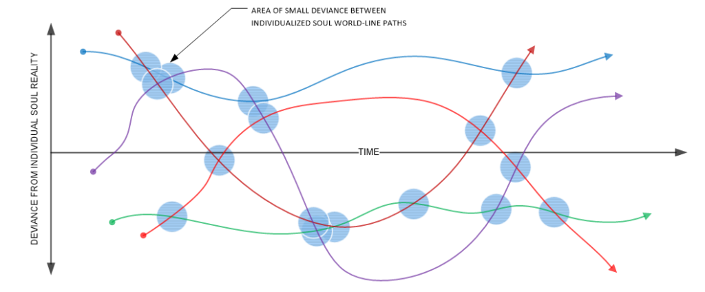
As such, the reader should note that even though each world-line is custom created by a soul for a given specific physical manifestation, different world-lines created by different souls could affect other world-lines. These areas of concern occur with there are very small deviance’s from the soul created realities for the physical manifestation.
How these influences affect the given world-line is a function of the [1] magnitude of the world-line divergence, the [2] strength of the thought / emotional content, the [3] receptiveness of the physical embodiment of the soul in the physical world-line (typically, most humans are very receptive), and [4] the quantity of the number of other world-lines so affected at this bleed-over event.
This last item is important because of the rapid dissemination of media and television has made larger groups of people easier to manipulate in thoughts, emotions and actions than at any other time in the human history.
The manipulation of large groups of people is a dangerous trend and results in large disruptive events that have negative consequences in world-line maintenance.
The big problem is that clusters of bleed-over events can have a great influence in the direction of world-line divergence. Consider the illustration below;
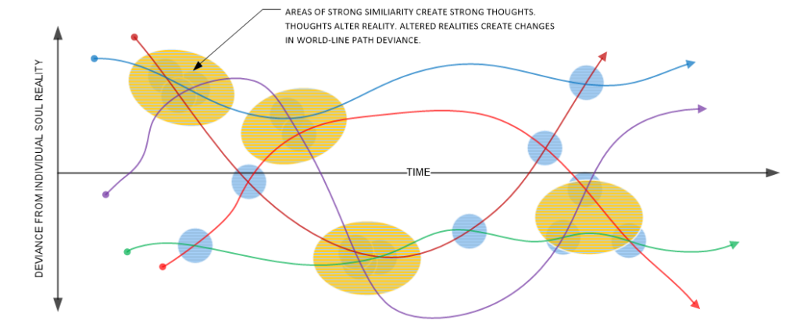
In the illustration above, it is clearly indicated (in yellow color) that the accumulation of bleed-over events can accumulate in various ways and create sizable influences on a given world-line. These influences can alter the events in a world-line though altering the thoughts and emotions of the “primary” physical entity within a given world-line.
In fact, these bleed-over events can alter the thoughts of the primary physical entity within a given world-line and as such can alter the shape, the path and the learning objectives of a given world-line. In the past this wasn’t too much of a problem. Before electronics, and the industrial revolution, change happened slowly. Individuals within a given world-line had time to adapt and alter their thoughts in meaningful and controllable ways.
No so today.
With the large number of people and their respective quantum shadows, the deluge of information , and the large numbers of people and organizations actually attempting to manipulate public opinion and thought, came the problem with unintentional world-line disruption and discord.
These items, not only can upset a given soul-level experience track, but can alter the physical manifestation along large groups and clusters of divergent world-lines.
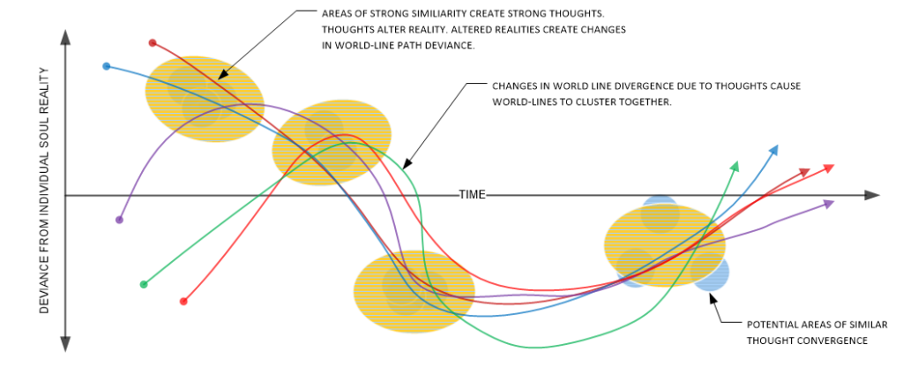
As can be illustrated in the above diagram, it should be clear to the reader that the accumulative bleed-over events from different world-lines can alter world-line path and manifestation. This is precisely what cause’s world-line clustering, which is a fundamental aspect of world-line travel. However, with everything, there are good and bad aspects of such clustering, and at it’s very worst can be highly “cancerous” to evolving sentience’s.
The reason for this is that unrestrained mass clustering activities can “box in” experience categories a and “lock out” individuals from experiencing such events. As a result, certain emotions or thoughts cannot manifest. These thoughts are often very important for sentience development.
Imagine the world today, if Albert Einstein could be prohibited from visualizing relativistic speed at light velocities. The problem is similar to that.
Dimensional Anchor stability in a Technological Society
With this in mind, the <redacted> realize that there will be events and situations that would be toxic to humans. This is especially true at this stage in the human sentience development.
They have centuries of experience in managing sentience evolution.
They know this though their inter-dimensional makeup, and their predictive abilities associated with the human nursery that we call the earth. They “saw” or “predicted” that certain “disruptive” events would occur on the earth that would be problematic.
They have mapped out human sentience evolution.
A Period of Sentience Crisis
The nature of these events are unknown to me, though they revolve around mass and group thoughts. I also know that the influence of these events were global in nature (not American-centrist) and that they would have occurred during the approximate time period from 1988 to 2004.
- There was a crisis in human sentience evolution.
- It was global in nature.
- It occurred in time period roughly from 1988 to 2004.
- It was triggered by mass thought manipulation on a global scale.
- The result was large numbers of discordant sentience development.
Avoiding the Crisis
Consider the diagram below. Here we can see that the <redacted> have “chartered a course” that the various clusters of world-lines should take to avoid disruptive events along a given time line. In my case, I was assigned to “anchor” a specific cluster of world-lines along this path. This course, and myself, are illustrated in the thick blue-green curved vector shown below;
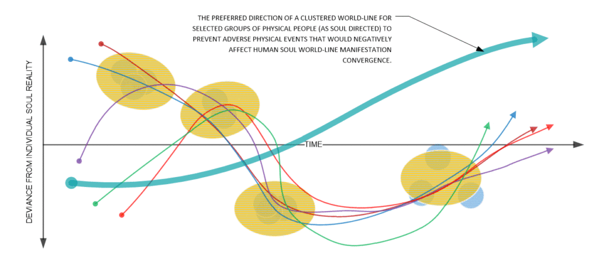
To accomplish this task, the <redacted> have provided me “training” and ability in that I could herd or corral in world-lines to follow a new path or direction.
Look at the illustration below. The idea is to redirect the world-lines (and the associated thoughts) in certain directions.
World-line Redirection
World-line redirection into areas of different divergence from my base-line is a task that the <redacted> are capable of doing. However, to do this, they need humans to act as “magnets” that can attract and repel adjacent ‘world-lines”. This action and behavior is complex and very complicated.
The human who is to become the “anchor”, must be [1] relocated into a physical area were the anchoring action must take place. Then, [2] the person must be exposed to an environment or set of sequences that generate thoughts. It is important that the thoughts so generated [3] manifest in a way such that the clustered world-lines bend properly. [4] The <redacted> then “amplifies” or “transmits” the thoughts in certain ways that herd the “world-lines” into the preferred vectors.
What this means is that the designated “anchor” ends up going to less than desirable living situations. Instead they go to areas of contention, or future contention. They go to areas where there is a high probability of discordant and disruptive thoughts would manifest. They mitigate the situation, and act as a kind of reality “anchor” while the quantum-related storms of thought and intention run amok. Yuck!
Here is a graph of this in process…
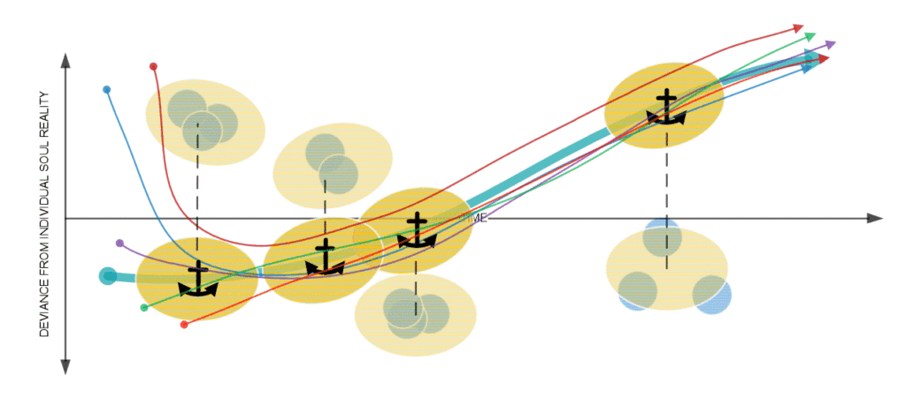
In the illustration above, it should be clear that to alter the direction of clusters of world-lines that what is required is that the regions of accumulated thought / emotional differences be minimized along the preferred travel path over time.
The way that this is accomplished is quite involved and involves the manipulation of group thought as lead and manipulated by the <redacted> themselves along the paths and structures established along the collective memories of “potential” group thought.
Everything is Scripted and Planned
Nothing happens at random.
Everything has a reason. Ones’ experiences creates a personality matrix that affects their personality. The <redacted> uses this personality as a framework by which divergent clusters can follow through anchoring.
Moreover…
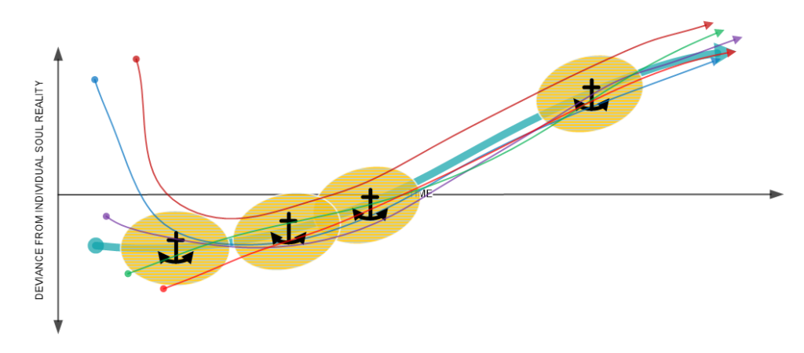
As such, the entire purpose of MAJestic in regards to assisting the <redacted> was to assist them by providing dimensional anchoring ability. This would then be used to assist a predetermined cluster of individual world-lines towards avoidance of a number of major disruptive influences in the 1988 to 2004 period.
Please take note of the final illustration below.
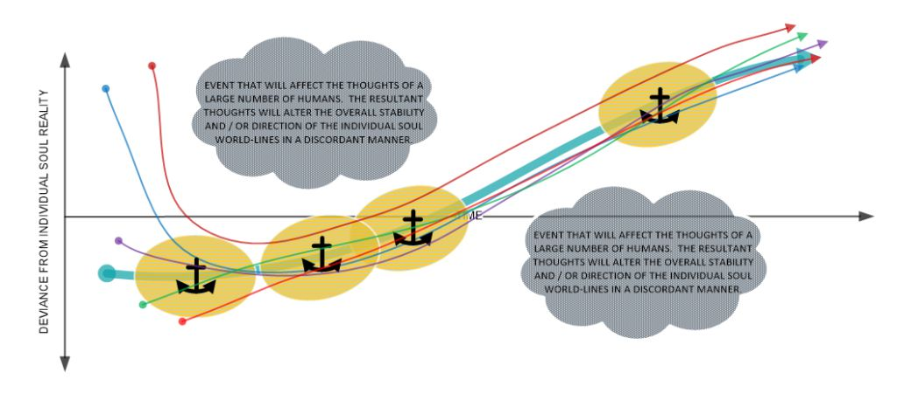
This is why I have repeatedly stated that the truth is too unusual for the typical reader, and very boring to those raised on a Hollywood-centrist “reality”.
Implementation
Please accept my apologies as I had to redact large portions of this section. It is not proper that I speak so freely about this at this time.
A person involved in world-line anchoring would be compelled to occupy different world-lines. These world-lines would not be due to their own individual thoughts and actions alone. These world-lines would be artificially created; manifested as areas of greater than normal deviance. The person would find themselves in uncomfortable situations, trying situations, and difficult situations that would generate thoughts and create actions on their part.
Over time, the cycling of the world-lines would mellow out. However, their own reality would end up being something completely different from what they would have had if they were in complete control of the their own MWI like most normal humans.
Initially, the deviance from the initial world-line was severe, but over time they mellowed out. See the graph below.

Conclusion
It’s nice and fun to contemplate what it would be like to move to another world-line. We can imagine all sorts of differences. Fun, huh?
Moving to another world-line is all about trade-offs.
Our reality is the sum-total results of our thoughts and actions, as well as the thoughts and actions of those around us. It is like having a backpack. If you want to include a football in it, you will need to make room, and take something out.
That being said, we are constantly moving about our reality and creating our own world-line. Everyone is doing so. While that is fine and dandy, the question begets our answer; “What is the benefit in switching world-lines?” And also, “Why invest in the technology to do so?”
The answer is simple;
- Humans are herd animals.
- We are in a nursery now because our souls are transitional.
- Our sentience development is watched carefully by <redacted>.
- To avoid problems, our world-lines need to be anchored.
Take Aways
- World-lines are the apparent movement of reality over time.
- World-lines cluster together due to thought similarity.
- Thoughts can alter a world-line and define a sentience.
- Improperly evolved sentience’s will result in terrible consequences.
- A species that oversees our sentience nursery utilizes the MWI to cull sentience development.
- To do this, they rely on “dimensional anchors”.
- A “dimensional anchor” is a MAJestic member who has been tasked to get into societal circumstances and anchor the world-line to limit spawning activities.
FAQ
Q: What is a “world-Line”?
A: A world-line is the path that our individual reality makes as it moves from one reality to a revised reality. There is an infinite number of world-lines. We can switch to a new world-line using technology.
Q: What is a “garbon”?
A: Souls are composed of ordered and unordered quanta. The ordered quanta forms into clumps or batches that interact in special ways. These clumps of ordered quanta are known as garbons.
Q: What is a “bubble of reality”?
A: A soul creates a special environment so that it can grow. This environment is a “bubble of reality”. It has two basic elements. One is a physical, observed reality. The other is a non-physical unobserved reality.
Q: What is a “Discordant sentience”?
A: Humans are growing. They are a transitional soul form. Humans need to evolve into a approved sentience and soul archetype. The garbon shape that manifests is directly tied to sentience. Humans can be either a service-to-self, or a service-for-others sentience. Discordant sentience’s is a development that lies outside of the two sentience types.
A good example of this is someone who thinks that they are helping people by supporting the taxation of other people. They believe that they are service-to-others, when in reality they are service-to-self. They are discordant because their thoughts do not match their actions.
A service-to-others sentience would give the money to the poor from their own wallet. A service-to-self sentience would keep the money and do nothing. A discordant sentience would be any outcome beyond the two mentioned.
Q: What is a “Dimensional Anchor”?
A: A dimensional anchor is a human that generates thoughts while being in a specific situation. The <redacted> utilize technology to amplify the thoughts so that it bends and move adjacent world-lines. World-lines, consisting of active consciousnesses, then bend and move in manners that would help with sentience selection.
Q: What is a “Consciousness”?
A: A consciousness is a portal that the soul uses to access the training and lessons obtained within a “bubble of reality”. Consciousness generally takes on particle form in order to operate an ambulatory human body within a reality. It takes on wave characteristics when it needs to exist the physical reality and migrate to the non-physical reality and other world-lines.
Consciousness must utilize a number of techniques to center the brain making it easy for the technology to convert particle behavior to wave behavior during a world-line switch. MAJestic utilizes feducials to do so.